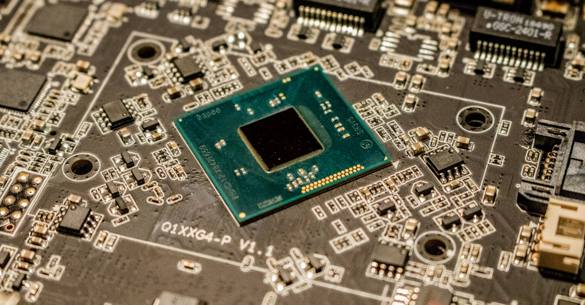

Anthropic et la course aux valorisations stratosphériques
L'écosystème de l'intelligence artificielle connaît une effervescence sans précédent, propulsant certaines entreprises vers des valorisations qui défient l'entendement. Bloomberg rapporte qu'Anthropic, un acteur majeur dans le développement de modèles d'IA générative, a récemment repoussé des offres d'investisseurs visant à valoriser la société à plus de 800 milliards de dollars. Cette proposition, qui aurait fait d'Anthropic l'une des entreprises les plus valorisées au monde, témoigne de la confiance des marchés dans le potentiel de croissance exponentielle de l'IA. La société, fondée par d'anciens membres d'OpenAI, se positionne comme un concurrent sérieux avec ses modèles Claude, axés sur la sécurité et l'éthique. Le refus de ces fonds massifs suggère une ambition à long terme et une volonté de conserver une plus grande indépendance stratégique, ou peut-être une conviction que la valorisation future sera encore plus élevée. Cette situation soulève des questions fondamentales sur la manière dont ces évaluations sont déterminées et sur la durabilité de telles croissances. Dans un monde où l'IA est appelée à transformer tous les secteurs, des finances à la santé, il est logique que les investisseurs se précipitent pour acquérir des parts dans les entreprises qui façonnent cette révolution. Cependant, une valorisation de 800 milliards de dollars, même pour une entreprise comme Anthropic, semble indiquer une anticipation de revenus et de profits futurs qui devront être colossaux pour justifier un tel investissement. Cela met en lumière la spéculation ambiante et la recherche d'opportunités dans un secteur en pleine mutation. La gestion de ces attentes sera cruciale pour Anthropic et ses futurs partenaires financiers.

Meta et Broadcom : Le mariage des puces pour l'IA
Parallèlement à cette course aux valorisations, d'autres géants de la tech consolident leurs positions en investissant massivement dans l'infrastructure matérielle nécessaire à l'IA. Bloomberg met en avant le partenariat multi-milliards de dollars entre Meta (Facebook) et Broadcom. Cet accord vise à concevoir et construire des puces personnalisées, optimisées pour les besoins spécifiques des centres de données et des applications d'intelligence artificielle de Meta. La conception de puces sur mesure est devenue une stratégie clé pour les grandes entreprises technologiques cherchant à améliorer les performances, réduire les coûts et sécuriser leur chaîne d'approvisionnement face à la demande croissante de puissance de calcul. Broadcom, un leader reconnu dans la conception de semi-conducteurs, apporte son expertise pour créer des processeurs et des accélérateurs d'IA qui répondront aux exigences d'apprentissage profond et d'inférence de Meta. Cette collaboration illustre la tendance de fond où les entreprises les plus gourmandes en puissance de calcul développent leurs propres solutions matérielles, plutôt que de dépendre exclusivement des offres standards du marché. Pour les acteurs de l'IA, qu'il s'agisse de recherche fondamentale ou d'applications commerciales comme le trading algorithmique de cryptomonnaies, l'accès à des puces performantes et spécialisées est un facteur déterminant de succès. La capacité à traiter d'énormes volumes de données en temps réel et à exécuter des modèles complexes rapidement est essentielle. Ce type de partenariat souligne l'importance critique de l'infrastructure matérielle dans la course à l'IA et son impact direct sur la capacité d'innovation et la compétitivité.
ASML : Le fournisseur clé qui tire profit de la demande IA
Dans ce paysage dynamique, ASML, le fournisseur néerlandais de machines de lithographie ultraviolette extrême (EUV), se trouve dans une position stratégique. L'entreprise a relevé ses prévisions de ventes pour l'année, confirmant que la demande soutenue pour les puces avancées, largement alimentée par l'essor de l'IA, continue de stimuler sa croissance. Les machines d'ASML sont indispensables à la fabrication des semi-conducteurs les plus sophistiqués, ceux qui équipent les serveurs des centres de données, les GPU pour l'entraînement des modèles d'IA, et potentiellement les futurs processeurs spécialisés comme ceux développés par Meta et Broadcom. La technologie EUV d'ASML permet de graver des circuits intégrés avec une précision inégalée, ouvrant la voie à des puces plus petites, plus rapides et plus économes en énergie. La demande pour ces machines hautement spécialisées et coûteuses est telle qu'ASML peine parfois à répondre aux commandes, ce qui renforce sa position dominante sur le marché. L'augmentation de ses prévisions de ventes est un indicateur fort de la santé du secteur des semi-conducteurs et, plus largement, de l'économie numérique. Pour les entreprises qui développent des solutions d'IA, y compris celles qui visent le marché du trading de cryptomonnaies, la capacité de production de semi-conducteurs avancés est un goulot d'étranglement potentiel. La performance et le coût des puces influent directement sur la rentabilité et l'efficacité des algorithmes de trading. La bonne santé d'ASML est donc une nouvelle rassurante pour l'ensemble de l'écosystème IA.

L'impact de l'IA sur le secteur financier et le trading crypto
La convergence de ces tendances – valorisations astronomiques des entreprises d'IA, investissements massifs dans l'infrastructure matérielle, et croissance soutenue des fournisseurs de technologies clés – a des implications profondes pour le secteur financier. L'intelligence artificielle n'est plus une technologie futuriste ; elle est en train de remodeler activement les marchés financiers. Dans le domaine du trading de cryptomonnaies, l'IA offre des perspectives révolutionnaires. Les agents IA, capables d'analyser en temps réel d'énormes quantités de données de marché, de news, de sentiments sociaux et de patterns complexes, peuvent identifier des opportunités de trading avec une rapidité et une précision inaccessibles aux traders humains. Ces agents peuvent exécuter des stratégies automatisées 24h/24, 7j/7, s'adaptant aux conditions de marché volatiles propres aux cryptos. La puissance de calcul accrue, rendue possible par les avancées matérielles d'entreprises comme Broadcom et les besoins satisfaits par ASML, est essentielle pour déployer ces systèmes d'IA sophistiqués. L'investissement dans des entreprises comme Anthropic, qui repousse les frontières de la recherche en IA, alimente indirectement l'innovation dans des domaines d'application comme le trading. La capacité à développer des modèles d'IA plus performants, plus robustes et plus rapides est directement liée aux progrès réalisés dans la conception et la fabrication des puces. Ainsi, la dynamique actuelle du marché de l'IA, bien que centrée sur de grandes entreprises technologiques, crée un environnement propice à l'émergence et à l'amélioration des outils de trading automatisé basés sur l'IA, y compris pour les actifs numériques.
Les défis de l'hyper-valorisation et la gestion des risques
Si les valorisations de plus de 800 milliards de dollars pour Anthropic suscitent l'enthousiasme, elles soulèvent également des préoccupations légitimes quant à la soutenabilité de ces chiffres. Une telle évaluation implique que les investisseurs anticipent des flux de revenus et de bénéfices futurs considérables, potentiellement bien au-delà de ce que les modèles économiques traditionnels pourraient suggérer. Cette bulle potentielle de valorisation, alimentée par l'engouement pour l'IA, pourrait présenter des risques significatifs. Si les entreprises n'atteignent pas les objectifs de croissance et de rentabilité attendus, une correction brutale du marché pourrait s'ensuivre, affectant non seulement les entreprises directement concernées mais aussi l'ensemble de l'écosystème d'investissement dans la tech. Pour les investisseurs dans le domaine des cryptomonnaies, où la volatilité est déjà une caractéristique intrinsèque, il est crucial de comprendre les dynamiques macroéconomiques qui influencent le sentiment général du marché. L'investissement dans des technologies de pointe comme l'IA, même s'il est prometteur, comporte des risques. La décision d'Anthropic de refuser des fonds à une valorisation aussi élevée pourrait être interprétée de plusieurs manières : soit une preuve de confiance extrême en son propre potentiel, soit une stratégie prudente pour éviter une dilution excessive ou une pression trop forte des investisseurs externes. Dans tous les cas, cette situation souligne la nécessité d'une analyse approfondie et d'une gestion rigoureuse des risques, que ce soit pour investir dans des entreprises d'IA ou dans des actifs numériques comme les cryptomonnaies. La spéculation, bien qu'elle puisse générer des gains rapides, doit être tempérée par une compréhension des fondamentaux et des risques sous-jacents.

L'avenir de l'IA et son intégration dans le trading
L'évolution rapide de l'IA, marquée par des avancées comme celles d'Anthropic, et le soutien matériel apporté par des collaborations comme celle entre Meta et Broadcom, préfigurent une intégration toujours plus poussée de l'IA dans tous les aspects de la finance, y compris le trading de cryptomonnaies. Les agents IA de demain seront capables de comprendre le contexte économique mondial, d'anticiper les réactions des marchés aux événements géopolitiques, et d'optimiser les stratégies de trading avec une finesse inégalée. Pour les plateformes de trading et les développeurs d'algorithmes, cela signifie une course constante à l'innovation pour rester compétitifs. L'accès à des infrastructures matérielles performantes, comme celles qui bénéficient de la technologie d'ASML, sera un avantage concurrentiel majeur. Les investisseurs cherchant à tirer parti des marchés de cryptomonnaies devront de plus en plus considérer l'utilisation d'outils basés sur l'IA pour naviguer dans la complexité et la rapidité de ces marchés. L'idée d'un agent IA qui trade les cryptos pour vous, 24h/24, n'est plus de la science-fiction mais une réalité en développement. La clé réside dans la qualité des modèles d'IA, la pertinence des données utilisées pour leur entraînement, et la robustesse de l'infrastructure qui les supporte. Les valorisations stratosphériques des entreprises leaders en IA témoignent de la reconnaissance de cette transformation imminente. Il est essentiel de suivre ces développements, non seulement pour comprendre le marché technologique, mais aussi pour anticiper les outils et les stratégies qui définiront le futur du trading, y compris celui des actifs numériques les plus innovants.
Conclusion : Naviguer dans l'ère de l'IA et des investissements
L'actualité autour d'Anthropic, Meta, Broadcom et ASML confirme une tendance de fond : l'intelligence artificielle est le moteur principal de l'innovation technologique et de la croissance économique actuelle. Les valorisations record, les investissements stratégiques dans le matériel, et la demande soutenue pour les technologies de pointe redessinent le paysage de l'investissement. Pour les acteurs du monde de la finance, et particulièrement ceux intéressés par les marchés de cryptomonnaies, comprendre et intégrer l'IA n'est plus une option mais une nécessité. L'émergence d'agents IA capables de trader automatiquement, optimisés par des puces toujours plus performantes, promet de révolutionner la manière dont les investissements sont gérés. Bien que les valorisations élevées puissent sembler intimidantes, elles reflètent la reconnaissance du potentiel transformateur de l'IA. Il est crucial pour les investisseurs de rester informés, d'évaluer les risques avec discernement et d'explorer les opportunités offertes par cette nouvelle ère technologique. L'avenir appartient à ceux qui sauront exploiter la puissance de l'IA pour naviguer sur les marchés financiers avec intelligence et efficacité.